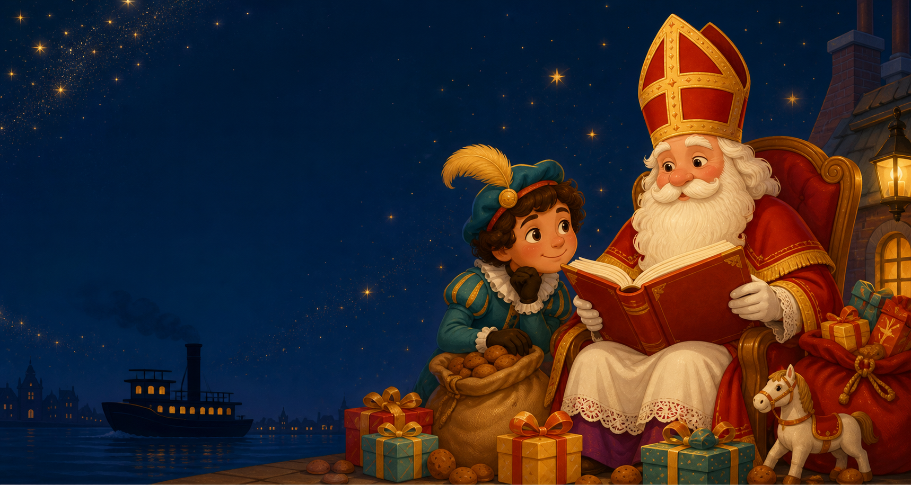

Drie worpen, één uniek gedicht
Gooi eerst voor wie, daarna voor wat en als laatste voor waar.
⚀
Je eerste worp kiest een dier of persoon.
Mijn Sinterklaasgedicht
Gebruik de drie uitkomsten. Voeg rijm, verrassingen en je eigen fantasie toe!

Een feestelijk schrijfspel
Drie worpen bepalen de hoofdpersoon, de actie en de plek. Daarna maak jij er een vrolijk, spannend of grappig gedicht van.
Gooi eerst voor wie, daarna voor wat en als laatste voor waar.
Je eerste worp kiest een dier of persoon.
Gebruik de drie uitkomsten. Voeg rijm, verrassingen en je eigen fantasie toe!